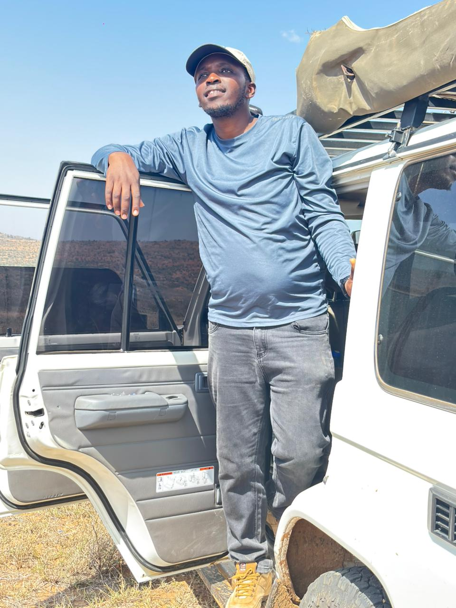

Wisdom Kipkemboi
About Me
I am a GIS and Earth Observation professional with 10+ years of experience transforming geospatial data into actionable insights. My expertise spans GIS, remote sensing, spatial analysis, and data visualization, with a focus on supporting decision-making for sustainable development. I have extensive experience in ArcGIS Enterprise deployment and maintenance, web-based GIS development with Django and GeoDjango, and managing spatial databases with PostgreSQL/PostGIS and MySQL. I also leverage Google Earth Engine for remote sensing analysis and work with ArcGIS Pro, QGIS, and ERDAS Imagine. Python is a key tool for my GeoAI projects. With a strong background in research and consultancy, I have authored and co-authored peer-reviewed publications. I am always open to new opportunities that leverage geospatial technology for meaningful change.
10
+
Years of
Experience
100
+
Happy
Clients
100
+
Complete
Projects
Skills
GIS
95%
Earth Observation
85%
Spatial Data Analysis
90%
Data Science & Machine Learning
86%
GIS Modelling
88%
Research & Writing
93%
Data Collection Tools (Customization)
82%
Enterprise GIS & Geoportal Integration
80%
Education
MSc, Geospatial Information Systems & Remote Sensing
Dedan Kimathi University of Technology | 2021 – 2023
BSc, Geospatial Information Science (Upper Second-Class Honours)
Dedan Kimathi University of Technology | 2013 – 2016
Short Courses & Training
- Application of GIS in Conservation Mapping – RCMRD (Aug 2025)
- Remote Sensing and GIS for Agriculture Informatics – IIRS, India (Aug 2024)
- Drone Flying (Remote Pilot License) – Geoid Technologies Ltd (Apr 2024)
- Data Science and Machine Learning – Africa Data School (Oct–Dec 2020)
- Sinapis Entrepreneurship Training Program – Sinapis (Feb–Sept 2020)
Certifications
- Certified Public Accountant (CPA) – KASNEB, Section 6 (2013–2017)
- Azure Fundamentals – Microsoft (Dec 2020)
Expericences
HOD DIKM | Senior GIS/RS Analyst
Centre for Training and Integrated Research in ASAL Development (CETRAD) | 2024 - Date
Head the Department of Information and Knowledge Management (DIKM) and lead geospatial research and applications in ASAL regions, focusing on sustainable transformation, restoration assessment, natural resource management, and GIS-based capacity strengthening.
MSc Research Assistant
Dedan Kimathi University of Technology (DeKUT) | 2021 - 2024
Supported teaching, research, and technical development at IGGReS, focusing on environmental conservation, forest restoration, and climate change mitigation in the Muringato Catchment.
Technical Lead – GIS & Carbon Projects Management
Northrift Solutions Ltd | 2019 - 2021
Led GIS and carbon management projects, delivering spatial solutions, infrastructure upgrades, and policy development for local and international clients
Land Survey Lecturer
Eldoret Technical Training Institute | 2018 - 2019
Taught and coordinated courses in photogrammetry, engineering survey, survey control, and cadastral studies.
GIS Analyst
Northrift Solutions Ltd | 2017 - 2019
Delivered GIS solutions, application development, and spatial data analysis for public and private sector clients.
Services
Enterprise GIS & Geoportal Integration
Specialized in implementing and integrating Enterprise GIS systems and configuring Geoportals to streamline data sharing, analysis, and decision-making. These solutions improve collaboration across departments and provide real-time access to geospatial data.
EO Analysis
These analysis services utilize satellite imagery and remote sensing data to monitor environmental changes, assess land use, and support decision-making for sustainable development, agriculture, and disaster management.
GIS Analysis & Modelling
These GIS analysis and modelling services utilize spatial data to identify patterns, assess relationships, and simulate geographic scenarios. They support applications in land use planning, environmental monitoring, infrastructure development, and decision support through advanced geospatial techniques and tools.
GIS-EO Development
These services combine GIS and Earth Observation technologies to create custom solutions for data collection, monitoring, and reporting. We develop web-based applications and tools that integrate spatial data for enhanced functionality and ease of use.
Research Consultancy
These research consultancy services leverage GIS, remote sensing, and spatial analysis to address challenges in environmental management, agriculture, disaster risk reduction, and more. It includes supporting data collection, analysis, and the application of research findings for practical impact.
GIS-RS Training
The GIS and Remote Sensing (RS) training programs are designed to build technical skills and knowledge in geospatial technologies. Whether you're a beginner or an advanced user, these training sessions will equip you with the skills needed to apply GIS and RS techniques effectively to real-world challenges.
Publications
Books
- Kuria, B. T., Wanjala, J. A., Kipkemboi, W., Muthee, S. W., & Chege, M. W. (2023). Let’s Save Our Environment. InterCEN Publishers. ISBN: 978-9914-9679-2-0.
Peer-reviewed Journal Articles
- Steinbach, S., Rienow, A., Chege, M. W., Dedring, N., Kipkemboi, W., et al. (2024). Low-cost sensors and multitemporal remote sensing for operational turbidity monitoring in an East African wetland. IEEE JSTARS, 17, 8490–8508. https://doi.org/10.1109/JSTARS.2024.3381756
- Muthee, S. W., Kuria, B. T., Mundia, C. N., Sichangi, A. W., Kipkemboi, W., et al. (2023). SARIMA model to predict evapotranspiration and runoff trends in Muringato river basin. Stochastic Environmental Research and Risk Assessment, 1–12. https://doi.org/10.1007/s00477-023-02534-w
- Kipkemboi, W., Kuria, B. T., Kuria, D. N., Sichangi, A. W., Mundia, C. N., et al. (2023). Development of a Web-GIS platform for environmental monitoring in Muringato Catchment, Kenya. Journal of Geovisualization and Spatial Analysis, 7(1), 13. https://doi.org/10.1007/s41651-023-00143-3
- Kipkemboi, W., Kuria, B. T., Kuria, D. N., Sichangi, A. W., Mundia, C. N., et al. (2022). Participatory GIS tool development for environmental and natural resources conservation. Environment, Development and Sustainability (Under review).
Conference Papers & Presentations
- Thuku, P. N., Kuria, B. T., Muraya, E. M., Chege, M. W., & Kipkemboi, W. (2025). Development of a Web-GIS application to determine farmers’ compliance with European Union Deforestation Regulations: A case study of coffee in Muringato Catchment, Nyeri. ESRI User Conference (Poster), San Diego, USA.
- Kuria, B. T., Kipkemboi, W., Muthee, S. W., Chege, M. W., Wanjala, J. A., & Rienow, A. (2024). Enhancing learners’ involvement in participatory environmental conservation. 43rd EARSeL Symposium, Manchester, UK.
- Kipkemboi, W., Kuria, B. T., & Kuria, D. N. (2023). Framework for implementing participatory GIS for environmental conservation in Muringato Catchment. 7th DeKUT International Conference, Nyeri, Kenya.
- Chege, M. W., Kuria, B. T., Sichangi, A. W., Ngigi, M. M., Muthee, S. W., Kipkemboi, W., & Wanjala, J. A. (2023). Spatial monitoring of river discharge using low-cost sensors. 7th DeKUT International Conference, Nyeri, Kenya.
- Steinbach, S., Bartels, A., Kipkemboi, W., Dedring, N., et al. (2023). Integrating low-cost sensors and remote sensing to monitor small reservoirs in Kenyan wetlands. 42nd EARSeL Symposium, Bucharest, Romania.
- Kipkemboi, W., Kuria, B. T., & Kuria, D. N. (2022). Assessing the effectiveness of a participatory GIS tool for environmental conservation in Muringato Catchment. 41st EARSeL Symposium, Paphos, Cyprus.
- Kipkemboi, W., Kuria, B. T., & Kuria, D. N. (2022). Participatory GIS tool for environmental conservation in Muringato Catchment. Living Planet Symposium, Bonn, Germany.
Theses
- MSc Thesis: Kipkemboi, W. (2023). Participatory GIS Tools for Environmental Conservation: A Case Study of Muringato Catchment Area, Nyeri, Kenya. Dedan Kimathi University of Technology.
- BSc Thesis: Kipkemboi, W. (2016). A GIS-Based Flood Risk Analysis and Mapping in Nyeri County. Dedan Kimathi University of Technology.
Portfolio

Testimonial
Wisdom's proficiency in GIS development and programming is truly impressive. He has a strong foundation in programming languages and geospatial technologies, making him an asset in any project requiring technical prowess.
Martin Chege
Software Developer | Research Assistant | Geospatial Information Science, Remote Sensing ExpertWisdom is a GIS Analyst with a rare combination of technical proficiency, attention to detail, and a proactive approach to problem-solving. I have full confidence in his abilities and recommend him wholeheartedly for any position in which his remarkable skills and dedication can shine.
Erick Makori
ArcGIS EnterpriseContact Me
© All Rights Reserved. Designed by HTML Codex